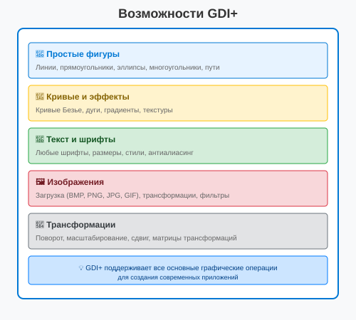
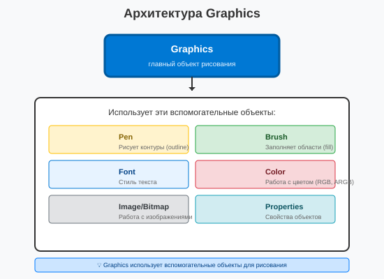
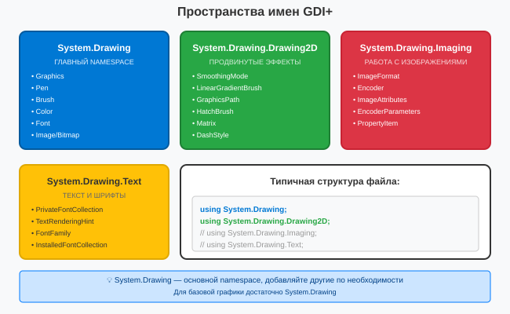

Урок 2.1: Введение в GDI+
📌 Ключевые моменты этого урока:
- Вспомните из урока 1.4: Paint событие — это где мы получаем Graphics объект
- GDI+ — это встроенная в .NET библиотека для всей двухмерной графики
- Graphics — главный объект для рисования (линий, фигур, текста, изображений)
- Pen рисует контуры (outline), Brush заполняет области (fill)
- Модуль 2 будет посвящен овладению GDI+ и рисованию разных элементов
Настройка проекта для работы с GDI+
Прежде чем начать рисовать, нужно правильно настроить проект и добавить необходимые пространства имен.
Шаг 1: Создание проекта Windows Forms
1. Откройте Visual Studio
2. Создайте новый проект "Windows Forms App (.NET Framework)"
3. Укажите имя проекта, например: "MyGDIPlusApp"
4. Нажмите "Создать"
Visual Studio автоматически добавит ссылки на библиотеки GDI+:
┌─────────────────────────────────────────────┐
│ Solution Explorer │
│ ▼ MyGDIPlusApp │
│ ▶ Properties │
│ ▶ References ← Здесь уже есть ссылки! │
│ │ ├─ System.Drawing ← GDI+ │
│ │ ├─ System.Drawing.Drawing2D │
│ │ ├─ System.Drawing.Imaging │
│ │ └─ System.Windows.Forms │
│ ▸ Form1.cs │
│ ▸ Program.cs │
└─────────────────────────────────────────────┘Шаг 2: Добавление пространств имен (Namespaces)
В начале каждого файла, где вы работаете с графикой, добавьте необходимые using директивы:
using System;
using System.Windows.Forms;
using System.Drawing; // ← Базовая графика (ОБЯЗАТЕЛЬНО)
using System.Drawing.Drawing2D; // ← Градиенты, сглаживание, пути
// using System.Drawing.Imaging; // ← Для работы с изображениями
// using System.Drawing.Text; // ← Для работы со шрифтами
namespace MyGDIPlusApp
{
public partial class Form1 : Form
{
public Form1()
{
InitializeComponent();
}
}
}Шаг 3: Добавление обработчика события Paint
Способ 1: Через Дизайнер форм
1. Откройте Дизайнер форм (Shift+F7)
2. Выделите форму (кликните по ней)
3. Откройте окно Properties (F4)
4. Перейдите на вкладку Events (значок ⚡)
5. Найдите событие Paint
6. Дважды кликните по пустому полю справа от Paint
Способ 2: Через код
1. Перейдите к коду формы (F7)
2. В конструкторе добавьте:
this.Paint += Form1_Paint;
3. Нажмите Tab дважды — Visual Studio автоматически создаст обработчикШаг 4: Получение объекта Graphics
private void Form1_Paint(object sender, PaintEventArgs e)
{
// Graphics — главный объект для рисования
Graphics g = e.Graphics;
// Теперь можно рисовать!
g.DrawLine(Pens.Black, 10, 10, 100, 100);
}Настройка качества рисования
private void Form1_Paint(object sender, PaintEventArgs e)
{
Graphics g = e.Graphics;
// Настройка качества рисования (рекомендуется)
g.SmoothingMode = SmoothingMode.AntiAlias; // Сглаживание краев
g.TextRenderingHint = TextRenderingHint.AntiAlias; // Сглаживание текста
// Теперь линии и текст будут выглядеть более гладкими
g.DrawEllipse(Pens.Blue, 10, 10, 100, 100);
}Использование IntelliSense при работе с GDI+
IntelliSense — это автодополнение кода в Visual Studio.
Он помогает находить методы и свойства объектов.
Пример использования:
1. Напишите "g." (точку после объекта Graphics)
2. Появится список методов и свойств:
┌──────────────────────────────────┐
│ Graphics │
│ ▼ │
│ • Clear(...) │
│ • CopyFromScreen(...) │
│ • DrawArc(...) │
│ • DrawBezier(...) │
│ • DrawEllipse(...) │
│ • DrawImage(...) │
│ • DrawLine(...) │
│ • DrawLines(...) │
│ • DrawPath(...) │
│ • DrawRectangle(...) │
│ • FillEllipse(...) │
│ • FillRectangle(...) │
│ • ... │
└──────────────────────────────────┘
3. Начните вводить "DrawLine" — список отфильтруется
4. Нажмите Tab или Enter — код вставится автоматически
Советы по IntelliSense:
• Ctrl+Space — вызвать IntelliSense вручную
• Ctrl+J — показать список параметров
• Ctrl+Shift+Space — показать информацию о параметре
• F12 — перейти к определению (Declaration)Что такое GDI+ — главная библиотека для графики
GDI+ (Graphics Device Interface Plus) — это интерфейс программирования приложений (API) для работы с двухмерной графикой, изображениями и типографикой в Windows. Она встроена в .NET Framework и является главным способом рисования на экране в Windows Forms.
Историческая справка:
- GDI (старый) — первая версия от Windows 3.1 (1990е)
- GDI+ — улучшенная версия с поддержкой современных техник
- Direct2D — даже более новая технология, но GDI+ по-прежнему главная для .NET
Почему GDI+ для графического программирования?
- Встроена в .NET — не нужно устанавливать дополнительные библиотеки
- Полная функциональность — линии, фигуры, текст, изображения, эффекты
- Кроссплатформана — код работает на Windows XP - Windows 11
- Хорошо документирована — много примеров и туториалов
- Подходит для обучения — простой API для начинающих
Возможности GDI+:

Основные возможности библиотеки GDI+
Архитектура GDI+ — главные компоненты
GDI+ состоит из нескольких ключевых компонентов, каждый отвечает за свою часть графики:
Главный объект: Graphics
- Graphics — это главный объект для рисования. Все методы рисования вызываются на нем (DrawLine, FillRectangle и т.д.)
- Вы получаете Graphics из PaintEventArgs в обработчике Paint события
- Graphics отвечает за:
- Рисование линий и фигур
- Рисование текста
- Трансформации (поворот, масштаб)
- Управление качеством рисования (сглаживание)
Вспомогательные объекты:

Архитектура объекта Graphics и вспомогательные объекты
Соотношение Graphics с другими объектами:
private void Form1_Paint(object sender, PaintEventArgs e)
{
// Graphics — главный объект
Graphics g = e.Graphics;
// Pen — нужна для РИСОВАНИЯ контура
Pen redPen = new Pen(Color.Red, 2); // Красная линия толщиной 2 пиксела
g.DrawLine(redPen, 10, 10, 100, 100); // Методъе Graphics использует Pen
// Brush — нужна для ЗАПОЛНЕНИЯ области
Brush blueBrush = new SolidBrush(Color.Blue);
g.FillRectangle(blueBrush, 20, 20, 50, 50); // Методъе Graphics использует Brush
// Font — нужна для ТЕКСТА
Font arial = new Font("Arial", 14);
g.DrawString("Текст", arial, Brushes.Black, 150, 10);
// Color часто используется напрямую с предопределёнными цветами
g.DrawEllipse(Pens.Green, 100, 100, 50, 50); // Pens.Green это готовая зелёная линия
// Image/Bitmap — для изображений
Bitmap image = new Bitmap("image.png");
g.DrawImage(image, 10, 100, 100, 100);
}Основные классы GDI+
Давайте разберемся с основными классами, которые вы будете использовать в графическом программировании:
Graphics — мастер рисования
// Главные методы Graphics для рисования:
// Линии
g.DrawLine(Pens.Black, 0, 0, 100, 100); // Прямая линия
// Фигуры (контур только)
g.DrawRectangle(Pens.Red, 10, 10, 50, 30); // Прямоугольник
g.DrawEllipse(Pens.Blue, 10, 10, 50, 50); // Эллипс
g.DrawPolygon(Pens.Green, points); // Многоугольник
// Фигуры (заполненные)
g.FillRectangle(Brushes.Red, 10, 10, 50, 30); // Заполненный прямоугольник
g.FillEllipse(Brushes.Blue, 10, 10, 50, 50); // Заполненный эллипс
g.FillPolygon(Brushes.Green, points); // Заполненный многоугольник
// Текст
g.DrawString("Привет", font, Brushes.Black, 10, 10);
// Изображение
g.DrawImage(image, 0, 0);
// Управление качеством
g.SmoothingMode = SmoothingMode.AntiAlias; // Сглаживание краевPen — рисование контуров
// Создание Pen для рисования линий и контуров
Pen blackPen = new Pen(Color.Black, 1); // Черная линия толщиной 1px
Pen thickRed = new Pen(Color.Red, 5); // Красная линия толщиной 5px
// Свойства Pen
redPen.Color = Color.Blue; // Изменить цвет
redPen.Width = 3; // Изменить толщину
redPen.DashStyle = DashStyle.Dash; // Пунктирная линия (---)
redPen.EndCap = LineCap.Round; // Скругленный конец
// Использование
g.DrawLine(blackPen, 10, 10, 50, 50); // Рисуем линию
g.DrawRectangle(thickRed, 100, 100, 50, 50); // Рисуем контур
// Готовые Pen (встроенные)
g.DrawLine(Pens.Black, 0, 0, 100, 100); // Предопределённая черная
g.DrawLine(Pens.Red, 0, 0, 100, 100); // Предопределённая краснаяBrush — заполнение областей
// SolidBrush — однотонное заполнение
Brush redBrush = new SolidBrush(Color.Red);
g.FillRectangle(redBrush, 10, 10, 50, 50); // Красный прямоугольник
// LinearGradientBrush — градиент (переход цветов)
LinearGradientBrush gradientBrush = new LinearGradientBrush(
new Point(0, 0),
new Point(100, 0), // От левого к правому края
Color.Red,
Color.Blue);
g.FillRectangle(gradientBrush, 10, 10, 100, 50); // Красный→синий градиент
// TextureBrush — заполнение изображением/текстурой
Bitmap pattern = new Bitmap("pattern.png");
TextureBrush textureBrush = new TextureBrush(pattern);
g.FillRectangle(textureBrush, 10, 10, 100, 100); // Заполнить текстурой
// Готовые Brush (встроенные)
g.FillRectangle(Brushes.Red, 10, 10, 50, 50); // Предопределённый красный
g.FillRectangle(Brushes.Green, 70, 10, 50, 50); // Предопределённый зелёныйFont — стиль текста
// Создание Font
Font arial12 = new Font("Arial", 12); // Arial, 12 точек
Font timesNewRomanBold = new Font("Times New Roman", 14, FontStyle.Bold);
Font arial10Italic = new Font("Arial", 10, FontStyle.Italic);
Font arial12BoldUnderline = new Font("Arial", 12,
FontStyle.Bold | FontStyle.Underline); // Объединённые стили
// Свойства Font
Font f = arial12;
string family = f.Name; // "Arial"
float size = f.Size; // 12
bool isBold = (f.Style & FontStyle.Bold) != 0; // true если жирный
// Использование
g.DrawString("Привет", arial12, Brushes.Black, 10, 10);Color — работа с цветами
// Создание цветов разными способами
Color red = Color.Red; // Встроенный красный
Color customColor = Color.FromArgb(255, 0, 0); // RGB красный
Color semiTransparentBlue = Color.FromArgb(128, 0, 0, 255); // ARGB полупрозрачный синий
// Свойства Color
Color c = Color.Blue;
int alpha = c.A; // Прозрачность (0-255)
int red2 = c.R; // Красный компонент (0-255)
int green = c.G; // Зелёный компонент (0-255)
int blue = c.B; // Синий компонент (0-255)
// Встроенные цвета
Color c1 = Color.AliceBlue;
Color c2 = Color.Tomato;
Color c3 = Color.WhiteSmoke;Пространства имен (Namespaces) GDI+
GDI+ разделён на несколько отдельных namespaces при зависимости от функциональности.
// Обязательно добавьте в начало файла:
// Базовые классы от правде (ВСЕГДА нужно)
using System.Drawing;
// Продвинутые возможности (нужны для фильтров, градиентов)
using System.Drawing.Drawing2D;
// Работа с изображениями и форматами (нужны для загрузки/сохранения)
using System.Drawing.Imaging;
// Работа с текстом и индвидуальными метриками (иногда нужны)
using System.Drawing.Text;Что находится в каждом namespace:

Пространства имен GDI+ и их содержимое
Типичная структура файла с GDI+:
using System;
using System.Windows.Forms;
using System.Drawing; // ← Базовая графика
using System.Drawing.Drawing2D; // ← Градиенты, пути
// using System.Drawing.Imaging; // ← Если работаете с форматами
// using System.Drawing.Text; // ← Если нужны пользовательские шрифты
namespace MyGraphicsApp
{
public partial class Form1 : Form
{
public Form1()
{
InitializeComponent();
this.Paint += Form1_Paint;
}
private void Form1_Paint(object sender, PaintEventArgs e)
{
Graphics g = e.Graphics;
// Улучшить качество рисования
g.SmoothingMode = SmoothingMode.AntiAlias; // ← Из Drawing2D
// Ваш код рисования
// ...
}
}
}Best Practices для GDI+:
- Всегда кэшируйте Pen, Brush, Font объекты — не создавайте их заново в Paint каждый раз
- Используйте Dispose() для больших объектов — изображения и кистях требуют освобождения памяти после use (или используйте using ())
- Используйте SmoothingMode.AntiAlias — для лучшего качества линий и фигур
- Избегайте прямого создания Font в Paint — кэшируйте их
- Помните о производительности — сложные трансформации медленнее простых рисунков
Что дальше в Модуле 2:
Теперь когда вы понимаете архитектуру GDI+, будут следующие уроки:
- 2.2 Рисование линий — различные способы рисования линий
- 2.3 Рисование фигур — прямоугольники, эллипсы, многоугольники
- 2.4 Работа с текстом — размещение и оформление текста
- 2.5 Кисти и градиенты — красивое заполнение областей
- 2.6 Трансформации — поворот, масштабирование, сдвиг
- 2.7 Работа с изображениями — загрузка, отображение, манипуляция
- 2.8 Практический проект — интеграция всего вместе
Практическое задание
Задание 1: Настройка проекта для работы с GDI+
- Создайте новый проект "Windows Forms App (.NET Framework)"
- Назовите проект: "MyGDIPlusApp"
- Откройте Solution Explorer (Ctrl+Alt+L)
- Разверните раздел References и убедитесь, что там есть System.Drawing
- Откройте Form1.cs (F7)
- Добавьте using директивы в начало файла:
using System.Drawing; using System.Drawing.Drawing2D;
Задание 2: Добавление обработчика Paint
- Перейдите в Дизайнер форм (Shift+F7)
- Выделите форму (кликните по ней)
- Откройте окно Properties (F4)
- Перейдите на вкладку Events (значок ⚡)
- Найдите событие Paint
- Дважды кликните по пустому полю справа от Paint
- Visual Studio автоматически перейдет к коду и создаст обработчик
Задание 3: Первое рисование
- В обработчике Form1_Paint добавьте код:
private void Form1_Paint(object sender, PaintEventArgs e) { Graphics g = e.Graphics; // Настройка качества g.SmoothingMode = SmoothingMode.AntiAlias; // Рисуем линию g.DrawLine(Pens.Black, 10, 10, 100, 100); // Рисуем прямоугольник g.DrawRectangle(Pens.Red, 150, 10, 50, 30); // Рисуем эллипс g.DrawEllipse(Pens.Blue, 220, 10, 50, 50); // Рисуем текст g.DrawString("Привет, GDI+!", new Font("Arial", 12), Brushes.Black, 10, 150); } - Запустите приложение (F5)
- Проверьте, что все элементы отображаются на форме
Задание 4: Работа с IntelliSense
- В обработчике Paint напишите "g."
- Изучите список доступных методов Graphics
- Начните вводить "Draw" и посмотрите, как фильтруется список
- Попробуйте использовать Ctrl+Space для вызова IntelliSense
- Нажмите F12 на методе DrawLine, чтобы перейти к его определению
Проверка знаний
Ответьте на вопросы, чтобы проверить, насколько хорошо вы усвоили материал: